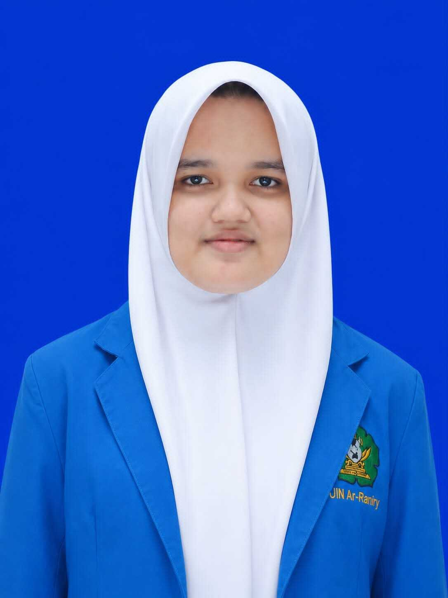

Fokus
Desain grafis dan teknologi informasi
CURRICULUM VITAE · PORTOFOLIO
Mahasiswa Teknologi Informasi di UIN Ar-Raniry Banda Aceh, dengan minat pada desain grafis dan teknologi.

01 / TENTANG SAYA
Saya adalah mahasiswa Teknologi Informasi yang tertarik pada perpaduan kreativitas dan teknologi.
Saya memiliki minat pada desain grafis dan teknologi informasi. Saya menggunakan Figma dan Canva untuk mengembangkan ide visual, serta senang mempelajari hal baru dan bekerja sama dalam kegiatan maupun proyek.
Desain grafis dan teknologi informasi
DEMA Fakultas · Divisi Kominfo
Bronze Award kompetisi Data Science
02 / PENDIDIKAN
Riwayat pendidikan yang sudah tersedia.
Program Studi Teknologi Informasi
Semester 5Nama SMA/SMK dan tahun pendidikan belum diberikan.
03 / PENGALAMAN & PORTOFOLIO
Pengalaman organisasi dan proyek yang telah disebutkan.
Proyek konsep aplikasi untuk mendukung kegiatan belajar mahasiswa.
Berpartisipasi dalam organisasi sebagai bagian dari Divisi Kominfo.
Pencapaian dalam kompetisi Data Science.
Proyek dan kegiatan praktikum di bidang jaringan.
04 / KEAHLIAN & MINAT
Desain antarmuka dan eksplorasi ide visual.
Desain grafis dan kebutuhan konten visual.
05 / KONTAK
Terbuka untuk terhubung dan berdiskusi seputar desain maupun teknologi.